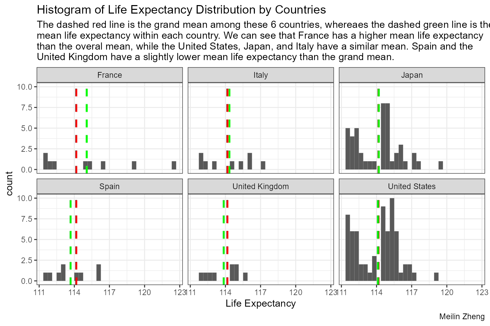
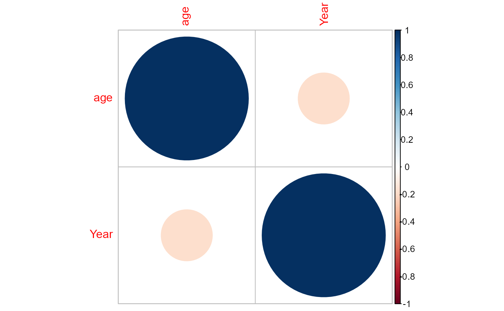

Question
In this centenarians dataset, which includes men and women who lives/lived longer than 100 years from countries all over the world, my primary objective is to investigate potential discrepancies in life expectancy based on factors such as gender, nationality, and birth time.
Original data
The data being used here is from TidyTuesday. It contains 200 known verified oldest people around the world.
Please click on this link here if we want to go to the source of the csv data file.
The original source of this data comes from the Wikipedia List of the verified oldest people via frankiethull on GitHub, you can read more about the information of this dataset from the readme here.
Data Dictionary
| variable | class | description |
|---|---|---|
| rank | integer | This person’s overall rank by age. |
| name | character | The full name of this person. |
| birth_date | date | This person’s birth date. |
| death_date | date | This person’s death date (or NA if still alive). |
| age | double | The person’s age, either on the day of their death or on the day when the dataset was extracted on 2023-05-25. |
| place_of_death_or_residence | character | Where the person lives now or where they were when they died. |
| gender | character | Most likely actually the sex assigned to the person at birth (the source article does not specify). |
| still_alive | character | Either “alive” if the person was still alive at the time when the article as referenced, or “deceased” if the person was no longer alive. |
Load the data
library(here)
#> here() starts at C:/Users/zheng/Desktop/StatisticalPrograming/corrplot
#In this step, you must test if a directory named data exists locally. If it does not, write an R function that creates it programmatically.
library(tidyverse)
#> ── Attaching core tidyverse packages ──────────────────────── tidyverse 2.0.0 ──
#> ✔ dplyr 1.1.2 ✔ readr 2.1.4
#> ✔ forcats 1.0.0 ✔ stringr 1.5.0
#> ✔ ggplot2 3.4.3 ✔ tibble 3.2.1
#> ✔ lubridate 1.9.2 ✔ tidyr 1.3.0
#> ✔ purrr 1.0.2
#> ── Conflicts ────────────────────────────────────────── tidyverse_conflicts() ──
#> ✖ dplyr::filter() masks stats::filter()
#> ✖ dplyr::lag() masks stats::lag()
#> ℹ Use the conflicted package (<http://conflicted.r-lib.org/>) to force all conflicts to become errors
if (!dir.exists(here("data"))) {
dir.create(here("data"))
}
# saves data only once (not each time you knit a R Markdown)
if (!file.exists(here("data", "centenarians.rda"))) {
tuesdata <- tidytuesdayR::tt_load("2023-05-30")
centenarians <- tuesdata$centenarians
save(centenarians, file = here("data", "centenarians.rda"))
}
#Read in the data locally each time you knit/render.
load(here("data", "centenarians.rda"))
str(centenarians)
#> spc_tbl_ [200 × 8] (S3: spec_tbl_df/tbl_df/tbl/data.frame)
#> $ rank : num [1:200] 1 2 3 4 5 6 7 8 9 10 ...
#> $ name : chr [1:200] "Jeanne Calment" "Kane Tanaka" "Sarah Knauss" "Lucile Randon" ...
#> $ birth_date : Date[1:200], format: "1875-02-21" "1903-01-02" ...
#> $ death_date : Date[1:200], format: "1997-08-04" "2022-04-19" ...
#> $ age : num [1:200] 122 119 119 119 118 ...
#> $ place_of_death_or_residence: chr [1:200] "France" "Japan" "United States" "France" ...
#> $ gender : chr [1:200] "female" "female" "female" "female" ...
#> $ still_alive : chr [1:200] "deceased" "deceased" "deceased" "deceased" ...
#> - attr(*, "spec")=
#> .. cols(
#> .. rank = col_double(),
#> .. name = col_character(),
#> .. birth_date = col_date(format = ""),
#> .. death_date = col_date(format = ""),
#> .. age = col_double(),
#> .. place_of_death_or_residence = col_character(),
#> .. gender = col_character(),
#> .. still_alive = col_character()
#> .. )
#> - attr(*, "problems")=<externalptr>Data Cleaning and Wranggling
library(dplyr)
library(lubridate)
library(stringr)
library(forcats)
centenarians <- centenarians %>% mutate(
country = factor(place_of_death_or_residence),
sex = factor(gender, labels = c("female", "male")),
status = factor(still_alive, labels = c("alive", "deceased"))
) %>%
select(-place_of_death_or_residence, -gender, -still_alive)
#used functions
#factor(), mutate(), select()
#use map_lgl() in purrr to check if these three newly created variables are factor indeed.
library(purrr)
map_lgl(.x = centenarians, .f = is.factor)
#> rank name birth_date death_date age country sex
#> FALSE FALSE FALSE FALSE FALSE TRUE TRUE
#> status
#> TRUEData Analysis
Life Expectancy among Males and Females
centenarians %>% group_by(sex) %>% summarise(mean_life_expectancy = sum(age)/n())
#> # A tibble: 2 × 2
#> sex mean_life_expectancy
#> <fct> <dbl>
#> 1 female 116.
#> 2 male 113.
#used functions
#group_by(), summarise(), n()The life expectancy among oldest females is higher than the life expectancy among oldest males.
age_sex <- centenarians %>% group_by(sex) %>% summarise(mean_life_expectancy = sum(age)/n())
age_sex <- data.frame(age_sex)
library(ggplot2)
p <- ggplot() + geom_boxplot(data = centenarians, aes(x = sex, y = age)) + geom_point(data = age_sex, aes(y = mean_life_expectancy, x = sex), shape = 18, color = "red", size = 6) + labs(title = "Life Expectancy by Sex", subtitle = "The red diamond is the calculated mean life expectancy among these two group. We can see that\nwomen has a higher mean life expectancy than men. Also, in the upper 25 percentile, women also\n have a much higher life expectancy than men.", y = "Life Expectancy", caption = "Meilin Zheng") + theme_bw()
#function used
#geom_boxplot(), geom_point()Life Expectancy by Country
centenarians %>% group_by(country) %>% summarise(total = n()) %>% mutate(country_lump = fct_lump(country, 6)) %>% group_by(country_lump) %>% summarise(total = sum(total)) %>% arrange(desc(total)) %>% head(6)
#> # A tibble: 6 × 2
#> country_lump total
#> <fct> <int>
#> 1 United States 66
#> 2 Japan 46
#> 3 France 9
#> 4 Italy 9
#> 5 Spain 9
#> 6 United Kingdom 9
#function used
#fct_lump()The table above gives the t6 countries with highest number of oldest people.
In the table above, we can see that among the 200 oldest people, 66 of them are from the United States, and 46 of them are from Japan.
By observing this table, it is still questionable whether United States and Japan have the highest number of oldest people in the world. The dataset may have a sampling bias that did not got to include oldest adult from other places around the world.
However, we will still use these 6 countries for analysis since they have larger amount of samples.
centenarians_reduced <- centenarians %>% filter(country == "United States" | country == "Japan" | country == "France" | country == "Italy" | country == "Spain" | country == "United Kingdom")
#functions used
#filter()
centenarians_reduced %>% group_by(country) %>% summarise(mean_life_expectancy = sum(age)/n())
#> # A tibble: 6 × 2
#> country mean_life_expectancy
#> <fct> <dbl>
#> 1 France 115.
#> 2 Italy 114.
#> 3 Japan 114.
#> 4 Spain 114.
#> 5 United Kingdom 114.
#> 6 United States 114.Among these six countries, people from France have the highest life expectancy.
ggplot(centenarians_reduced) + geom_histogram(aes(x = age)) + geom_vline(aes(xintercept = mean(age)), color = "red", linetype = "dashed", size = 1) + theme_bw() + facet_wrap(country~.) + geom_vline(data = (centenarians_reduced %>% group_by(country) %>% summarise(mean_age = mean(age))), aes(xintercept = mean_age), color = "green", linetype = "dashed", size = 1) + labs(title = "Histogram of Life Expectancy Distribution by Countries", x = "Life Expectancy", subtitle = "The dashed red line is the grand mean among these 6 countries, whereaes the dashed green line is the\nmean life expectancy within each country. We can see that France has a higher mean life expectancy\nthan the overal mean, while the United States, Japan, and Italy have a similar mean. Spain and the\nUnited Kingdom have a slightly lower mean life expectancy than the grand mean.", caption = "Meilin Zheng")
#> Warning: Using `size` aesthetic for lines was deprecated in ggplot2 3.4.0.
#> ℹ Please use `linewidth` instead.
#> This warning is displayed once every 8 hours.
#> Call `lifecycle::last_lifecycle_warnings()` to see where this warning was
#> generated.
#> `stat_bin()` using `bins = 30`. Pick better value with `binwidth`.
#used function
#geom_histogram(), geom_vline(), facet.wrap()Life Expectancy by Birth Time
centenarians_year <- centenarians %>% mutate(Year = year(birth_date))
#use mapping in purr to print out the unique birth year.
unique_year <- function(x) unique(x)
map_dbl(.x = centenarians_year$Year, .f = unique_year)
#> [1] 1875 1903 1880 1904 1900 1880 1900 1899 1901 1875 1898 1904 1889 1899 1898
#> [16] 1905 1879 1905 1890 1896 1903 1907 1906 1901 1902 1907 1899 1905 1882 1897
#> [31] 1903 1905 1877 1893 1882 1900 1878 1899 1894 1890 1904 1905 1891 1893 1902
#> [46] 1908 1890 1906 1907 1871 1906 1890 1907 1887 1905 1886 1906 1897 1900 1896
#> [61] 1884 1908 1907 1885 1895 1881 1908 1907 1896 1908 1903 1908 1895 1900 1901
#> [76] 1890 1901 1889 1902 1903 1896 1896 1895 1880 1900 1900 1907 1893 1881 1882
#> [91] 1890 1885 1907 1903 1905 1907 1873 1901 1896 1887 1897 1882 1891 1897 1896
#> [106] 1889 1906 1889 1905 1909 1890 1903 1884 1895 1889 1905 1880 1900 1903 1910
#> [121] 1906 1910 1885 1904 1896 1908 1907 1889 1909 1894 1903 1877 1906 1909 1896
#> [136] 1886 1881 1890 1909 1910 1888 1909 1904 1903 1876 1896 1894 1910 1909 1901
#> [151] 1907 1909 1907 1884 1908 1891 1891 1879 1906 1907 1902 1910 1896 1894 1905
#> [166] 1911 1901 1907 1910 1910 1856 1893 1888 1904 1889 1911 1878 1908 1908 1907
#> [181] 1875 1910 1881 1900 1908 1897 1908 1875 1911 1895 1909 1910 1895 1902 1893
#> [196] 1908 1909 1911 1911 1898
# all of the 200 people in the dataset are born in different years.
cor <- centenarians_year %>% select(age, Year)
cor <- data.frame(cor)
cor.mtest(cor)
#> $p
#> age Year
#> age 0.00000000 0.01438442
#> Year 0.01438442 0.00000000
#>
#> $lowCI
#> age Year
#> age 1.0000000 -0.3042884
#> Year -0.3042884 1.0000000
#>
#> $uppCI
#> age Year
#> age 1.00000000 -0.03494132
#> Year -0.03494132 1.00000000
#used cor.mtest()
p <- corrplot(cor(cor))
p
#> $corr
#> age Year
#> age 1.0000000 -0.1728444
#> Year -0.1728444 1.0000000
#>
#> $corrPos
#> xName yName x y corr
#> 1 age age 1 2 1.0000000
#> 2 age Year 1 1 -0.1728444
#> 3 Year age 2 2 -0.1728444
#> 4 Year Year 2 1 1.0000000
#>
#> $arg
#> $arg$type
#> [1] "full"
#used corrplot()
centenarians_year_1900 <- centenarians_year %>% filter(Year < 1900)
p1 <- ggplot(centenarians_year_1900) + geom_point(aes(x = Year, y = age)) + theme_bw() + labs(title = "Birth Year vs. Life Expectancy\nbefore 20th Century", subtitle = "No obious association is observed between\nbirth time and age.", caption = "Meilin Zheng", y = "Life Expectancy") + scale_y_continuous(limits = c(110, 125))
centenarians_year_2000 <- centenarians_year %>% filter(Year > 1900)
p2 <- ggplot(centenarians_year_2000) + geom_point(aes(x = Year, y = age)) + theme_bw() + labs(title = "Birth Year vs. Life Expectancy\nafter 20th Century", subtitle = "No obious association is observed between\nbirth time and age.", caption = "Meilin Zheng", y = "Life Expectancy") + scale_y_continuous(limits = c(110, 125))Conclusion
In conclusion, we found that female have a higher life expectancy than male. Also, developed countries such as the United States and Japan seem to have more people with greater life expectancy. There is no obvious association observed between the time the people were born and their age.
Functions being used
| package | function |
|---|---|
| dplyr |
select(), filter(), mutate(),
group_by(), summarise()
|
| lubridate | year() |
| forcats |
factor(), factor_lump()
|
| purrr |
map_lgl(), map_dbl()
|
| corrplot |
cor.mtest(), corrplot()
|
| ggplot2 |
geom_point(), geom_vline(),
geom_boxplot(), geom_histogram(),
facet_wrap()
|